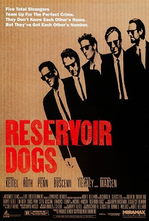

Reservoir Dogs

Reservoir Dogs is a 1992 American heist film written and directed by Quentin Tarantino in his feature-length directorial debut. It stars Harvey Keitel, Tim Roth, Chris Penn, Steve Buscemi, Lawrence Tierney, Michael Madsen, Tarantino, and Edward Bunker as diamond thieves whose heist of a jewelry store goes terribly wrong. Kirk Baltz, Randy Brooks, and Steven Wright also play supporting roles. The film incorporates many motifs that have become Tarantino's hallmarks: violent crime, pop culture references, profanity, and nonlinear storytelling.